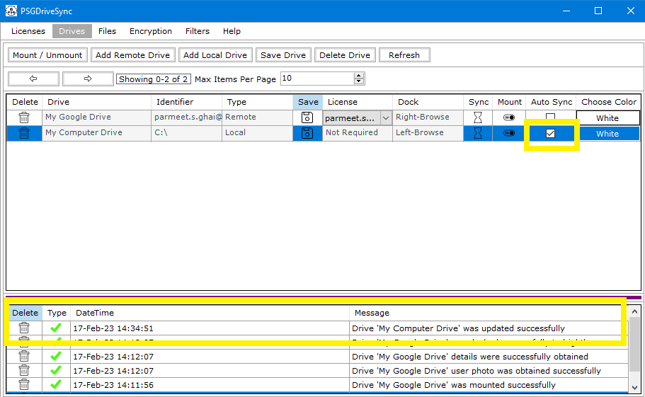
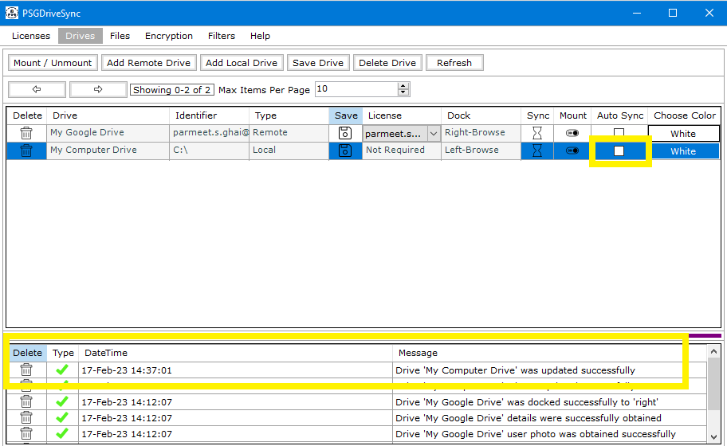

AutoSync allows a drive saved in the application to be mounted automatically and have its sync operations started right after. This allows the drive to
sync its files and folders with other drives even though those drives themselves do not have "Auto Sync" enabled on them.
For example, If Drive A has been set to
sync its file "File A" with Drive B and Drive B has been set to sync its file "File B" with Drive A and "Auto Sync" has only been enabled on Drive A but not Drive B
then the following actions will take place
|
1 |
In order to enable "Auto Sync" on a drive, you need to select the drive first and then put a check mark in the box labelled as "Auto Sync". After that you can save the drive settings and the same should reflect in system messages. |
 |
|
2 |
In order to disable "Auto Sync" on a drive, you need to select the drive first and then uncheck the box labelled as "Auto Sync". After that you can save the drive settings and the same should reflect in system messages. |
 |